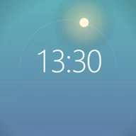
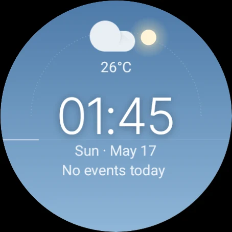

Get it from Google Play
Open the Play Store on your watch and search for WatchSky, or use the Google Play button on this page and install it to your watch.

WatchSky for Wear OSWatchSky paints the real sky behind the time. It lightens at dawn, turns gold at sunset and fills with stars at night. The sun and moon cross the face on an arc, and the sky changes with the weather.
Free. For Wear OS 5.1 and newer. No ads, no accounts, no tracking.

Daytime · now
Make it yours
On the watch, long-press WatchSky and tap Customize. You get these same options, with the same icons. Try them on the watch on this page.
Eleven layers of sky blend into each other as the hours pass: night, blue hour, sunrise, golden hour, a clear midday blue, and back again. Stars fade in after sunset. Drag the slider under the watch, press play to watch a whole day, or jump to a moment:
With Show weather on, an icon and the temperature sit above the time. The sky follows the conditions too: grey under cloud and snow, darker in the rain.
At night the moon takes the sun's place on the arc. Live follows the real phase, or you can keep your favourite.
The thin line along the horizon fills up. Pick what it counts: seconds, minutes or battery. You can also turn it off. Minutes and battery stay on in always-on mode.
Set the hours to match where you live and the time of year, and the sky, the arc and the stars shift with them.
Sunrise
Sunset
The slot under the date shows your next event by default. You can swap in any long-text complication. Tap the date to open your calendar.
Install
WatchSky is free on Google Play for watches with Wear OS 5.1 or newer. It runs entirely on the watch.
Open the Play Store on your watch and search for WatchSky, or use the Google Play button on this page and install it to your watch.
Some phones don't list watch faces. The same listing then installs a small WatchSky phone app. Tap Install on watch in it and the listing opens on your paired watch.
The watch faces don't collect, store or send any personal data. There are no accounts, ads or analytics. Read the privacy policy.
Have a look at the support page, or email developerdfa@gmail.com.